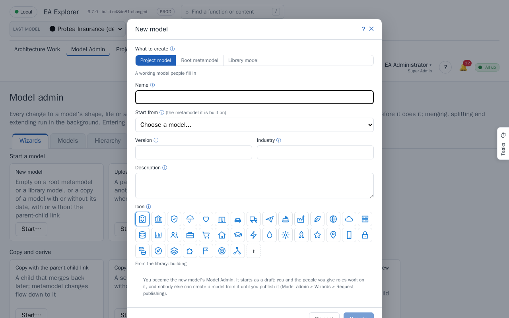

Build a metamodel in Excel
For: Industry model makers, Model Admin
A whole metamodel as one workbook: types, attributes, allowed relationships and rules, made into a model.

#/model-admin/wizards?wizard=newWhy do this
Designing a metamodel is easier in a spreadsheet: types, attributes, pick lists and allowed relationships side by side, reviewed with colleagues. EA Explorer reads the workbook, checks it, and builds the metamodel from it. See Metamodels: the shape of a model.
A metamodel change ripples: into what people may record, what reports read, what rules check and what integrations send. That is why it goes through drafts and review, and why each version is kept and can be compared.
In TOGAF terms: The content framework and content metamodel: what building blocks and relationships the architecture may hold. See EA Explorer and the TOGAF Standard.
The goal: A whole metamodel designed in a workbook, then made into a model.
Before you start You need the Model Creator role.
Steps
- Model Admin › Wizards, Model from a metamodel workbook: download the empty template, or any model's metamodel in the same layout.
- Fill in the sheets: Model, Domains (code, name, colour), Pick lists, Attributes, Types (code, name, domain, ID prefix, notation, colour), Type attributes (which type has which attribute, required or not), Relationship types, Allowed relationships (with multiplicity: 1, 0..1, 1.., 0.., 2..5) and Rules.
- Upload it and check what it would make.
- Make a new model from it, blank (the workbook is the whole metamodel), or add it to an existing model (it adds and updates, never takes away).